일반기계기사 (2020-09-26 기출문제)
1과목: 재료역학
1. 자유단에 집중하중 P를 받는 외팔보의 최대 처짐 δ1과 W = ωL이 되게 균일분포하중(ω)이 작용하는 외팔보의 자유단 처짐 δ2가 동일하다면 두 하중들의 비 W/P는 얼마인가? (단, 보의 굽힘 강성은 EI로 일정하다.)
- 8/3
- 3/8
- 5/8
- 8/5
(정답률: 56%)

2. 다음 부정정보에서 고정단의 모멘트 Mo는?
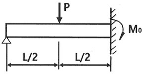
- PL/3
- PL/4
- PL/6
- 3PL/16
(정답률: 57%)
3. 그림과 같은 외팔보에 저장된 굽힘 변형에너지는? (단, 세로탄성계수는 E이고, 단면의 관성모멘트는 I이다.)
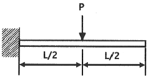
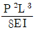
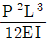
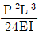
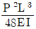
(정답률: 45%)
4. 지름 7mm, 길이 250mm인 연강 시험편으로 비틀림 시험을 하여 얻은 결과, 토크 4.08Nㆍm에서 비틀림 각이 8°로 기록되었다. 이 재료의 전단탄성계수는 약 몇 GPa인가?
- 64
- 53
- 41
- 31
(정답률: 63%)
5. 그림과 같은 보에 하중 P가 작용하고 있을 때 이 보에 발생하는 최대 굽힘응력이 σmax라면 하중 P는?
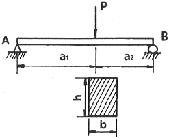
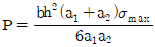
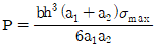
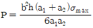
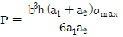
(정답률: 59%)
6. 그림과 같이 수평 강체봉 AB의 한쪽을 벽에 힌지로 연결하고 죄임봉 CD로 매단 구조물이 있다. 죄임봉의 단면적은 1cm2, 허용 인장응력은 100MPa일 때 B단의 최대 안전하중 P는 몇 kN인가?
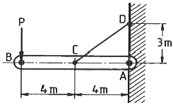
- 3
- 3.75
- 6
- 8.33
(정답률: 29%)
7. 지름 35cm의 차축이 0.2°만큼 비틀렸다. 이때 최대 전단응력이 49MPa이라고 하면 이 차축의 길이는 약 몇 m인가? (단, 재료의 전단탄성계수는 80 GPa이다.)
- 2.5
- 2.0
- 1.5
- 1
(정답률: 60%)
8. 양단이 고정된 균일 단면봉의 중간단면 C에 축하중 P를 작용시킬 때, A, B에서 반력은?
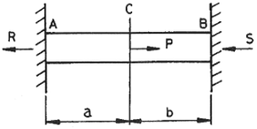
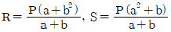
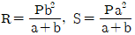
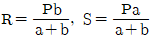
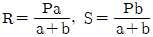
(정답률: 58%)
9. 아래와 같은 보에서 C점(A에서 4m 떨어진 점)에서의 굽힘모멘트 값은 약 몇 kNㆍm인가?
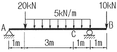
- 5.5
- 11
- 13
- 22
(정답률: 45%)
10. 그림과 같은 직사각형 단면에서 y1=(2/3)h의 위쪽 면적(빗금 부분)의 중립축에 대한 단면 1차모멘트 Q는?
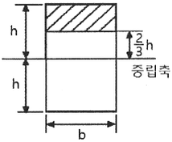
- (3/8)bh2
- (3/8)bh3
- (5/18)bh2
- (5/18)bh3
(정답률: 45%)
11. 공칭응력(nominal stress:σn)과 진응력(true stress:σt)사이의 관계식으로 옳은 것은? (단, εn은 공칭변형율(nominal strain), εt는 진변형율(true strain)이다.)
- σt=σn(1+εt)
- σt=σn(1+εn)
- σt=ln(1+σn)
- σt=ln(σn+εn)
(정답률: 56%)
12. 그림과 같이 등분포하중이 작용하는 보에서 최대 전단력의 크기는 몇 kN인가?
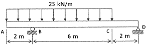
- 50
- 100
- 150
- 200
(정답률: 44%)
13. σx=700MPa, σy=-300MPa이 작용하는 평면응력 상태에서 최대 수직응력(σmax)과 최대 전단응력(τmax)은 각각 몇 MPa인가?
- σmax=700, τmax=300
- σmax=700, τmax=500
- σmax=600, τmax=400
- σmax=500, τmax=700
(정답률: 65%)
14. 안지름이 2m이고 1000kPa의 내압이 작용하는 원통형 압력 용기의 최대 사용응력이 200MPa이다. 용기의 두께는 약 몇 mm인가? (단, 안전계수는 2이다.)
- 5
- 7.5
- 10
- 12.5
(정답률: 52%)
15. 양단이 고정단인 주철 재질의 원주가 있다. 이 기둥의 임계응력을 오일러 식에 의해 계산한 결과 0.0247E로 얻어졌다면 이 기둥의 길이는 원주 직경의 몇 배인가? (단, E는 재료의 세로탄성계수이다.)
- 12
- 10
- 0.⑤
- 0.001
(정답률: 41%)
16. 높이가 L이고 저면의 지름이 D, 단위 체적당 중량 ϒ의 그림과 같은 원추형의 재료가 자중에 의해 변형될 때 저장된 변형에너지 값은? (단, 세로탄성계수는 E이다.)
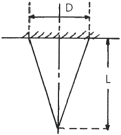
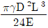
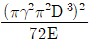
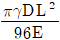
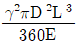
(정답률: 26%)
17. 그림과 같은 단면의 축이 전달할 토크가 동일하다면 각 축의 재료 선정에 있어서 허용전단응력의 비 τA/τB의 값은 얼마인가?
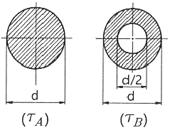
- 15/16
- 9/16
- 16/15
- 16/9
(정답률: 49%)
18. 단면 지름이 3cm인 환봉이 25kN의 전단하중을 받아서 0.00075 rad 의 전단변형률을 발생시켰다. 이때 재료의 세로탄성계수는 약 몇 GPa인가? (단, 이 재료의 포아송 비는 0.3이다.)
- 75.5
- 94.4
- 122.6
- 157.2
(정답률: 48%)
19. 원형단면의 단순보가 그림과 같이 등분포하중 ω=10N/m를 받고 허용응력이 800Pa일 때 단면의 지름은 최소 몇 mm가 되어야 하는가?
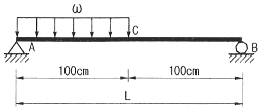
- 330
- 430
- 550
- 650
(정답률: 35%)
20. 그림과 같이 지름 d인 강철봉이 안지름 d, 바깥지름 D인 동관에 끼워져서 두 강체 평판 사이에서 압축되고 있다. 강철봉 및 동관에 생기는 응력을 각각 σs, σc라고 하면 응력의 비(σs/σc)의 값은? (단, 강철(Es) 및 동(Ec)의 탄성계수는 각각 Es=200GPa, Ec=120GPa이다.)
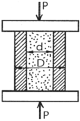
- 3/5
- 4/5
- 5/4
- 5/3
(정답률: 57%)
2과목: 기계열역학
21. 비가역 단열변화에 있어서 엔트로피 변화량은 어떻게 되는가?
- 증가한다.
- 감소한다.
- 변화량은 없다.
- 증가할 수도 감소할 수도 있다.
(정답률: 38%)
22. 그림과 같이 A, B 두 종류의 기체가 한 용기 안에서 박막으로 분리되어 있다. A의 체적은 0.1m3, 질량은 2kg이고, B의 체적은 0.4m3, 밀도는 1kg/m3이다. 박막이 파열되고 난 후에 평형에 도달하였을 때 기체 혼합물의 밀도(kg/m3)는 얼마인가?
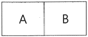
- 4.8
- 6.0
- 7.2
- 8.4
(정답률: 53%)
23. 엔트로피(s) 변화 등과 같은 직접 측정할 수 없는 양들을 압력(P), 비체적(v), 온도(T)와 같은 측정 가능한 상태량으로 나타내는 Maxwell 관계식과 관련하여 다음 중 틀린 것은?
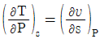
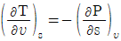
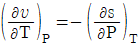
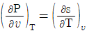
(정답률: 33%)
24. 냉매로서 갖추어야 될 요구 조건으로 적합하지 않은 것은?
- 불활성이고 안정하며 비가연성 이어야 한다.
- 비체적이 커야 한다.
- 증발 온도에서 높은 잠열을 가져야 한다.
- 열전도율이 커야한다.
(정답률: 57%)
25. 어떤 이상기체 1kg이 압력 100kPa, 온도 30℃의 상태에서 체적 0.8m3을 점유한다면 기체상수(kJ/kgㆍK)는 얼마인가?
- 0.251
- 0.264
- 0.275
- 0.293
(정답률: 62%)
26. 어떤 가스의 비내부에너지 u(kJ/kg), 온도 t(℃), 압력 P(kPa), 비체적 v(m3/kg) 사이에는 아래의 관계식이 성립한다면, 이 가스의 정압비열(kJ/kgㆍ℃)은 얼마인가?
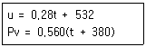
- 0.84
- 0.68
- 0.50
- 0.28
(정답률: 44%)
27. 이상적인 가역과정에서 열량 △Q가 전달될 때, 온도 T가 일정하면 엔트로피 변화 △S를 구하는 계산식으로 옳은 것은?
- △S = 1-(△Q/T)
- △S = 1-(T/△Q)
- △S = △Q/T
- △S = T/△Q
(정답률: 62%)
28. 다음 중 경로함수(path function)는?
- 엔탈피
- 엔트로피
- 내부에너지
- 일
(정답률: 58%)
29. 랭킨사이클의 각 점에서의 엔탈피가 아래와 같을 때 사이클의 이론 열효율(%)은?
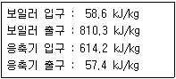
- 32
- 30
- 28
- 26
(정답률: 57%)
30. 원형 실린더를 마찰 없는 피스톤이 덮고 있다. 피스톤에 비선형 스프링이 연결되고 실린더 내의 기체가 팽창하면서 스프링이 압축된다. 스프링의 압축 길이가 Xm일 때 피스톤에는 kX1.5N의 힘이 걸린다. 스프링의 압축 길이가 0m에서 0.1m로 변하는 동안에 피스톤이 하는 일이 Wa이고, 0.1m에서 0.2m로 변하는 동안에 하는 일이 Wb라면 Wa/Wb는 얼마인가?
- 0.083
- 0.158
- 0.214
- 0.333
(정답률: 32%)
31. 내부 에너지가 30kJ인 물체에 열을 가하여 내부 에너지가 50kJ이 되는 동안에 외부에 대하여 10kJ의 일을 하였다. 이 물체에 가해진 열량(kJ)은?
- 10
- 20
- 30
- 60
(정답률: 57%)
32. 풍선에 공기 2kg이 들어 있다. 일정 압력 500kPa 하에서 가열 팽창하여 체적이 1.2배가 되었다. 공기의 초기온도가 20℃일 때 최종온도(℃)는 얼마인가?
- 32.4
- 53.7
- 78.6
- 92.3
(정답률: 57%)
33. 처음 압력이 500kPa이고, 체적이 2m3인 기체가 “PV=일정”인 과정으로 압력이 100kPa까지 팽창할 때 밀폐계가 하는 일(kJ)을 나타내는 계산식으로 옳은 것은?
- 1000ln(2/5)
- 1000ln(5/2)
- 1000ln5
- 1000ln(1/5)
(정답률: 43%)
34. 자동차 엔진을 수리한 후 실린더 블록과 헤드사이에 수리 전과 비교하여 더 두꺼운 개스킷을 넣었다면 압축비와 열효율은 어떻게 되겠는가?
- 압축비는 감소하고, 열효율도 감소한다.
- 압축비는 감소하고, 열효율은 증가한다.
- 압축비는 증가하고, 열효율은 감소한다.
- 압축비는 증가하고, 열효율도 증가한다.
(정답률: 42%)
35. 고온 열원의 온도가 700℃이고, 저온 열원의 온도가 50℃인 카르노 열기관의 열효율(%)은?
- 33.4
- 50.1
- 66.8
- 78.9
(정답률: 60%)
36. 밀폐계에서 기체의 압력이 100kPa으로 일정하게 유지되면서 체적이 1m3에서 2m3으로 증가되었을 때 옳은 설명은?
- 밀폐계의 에너지 변화는 없다.
- 외부로 행한 일은 100kJ이다.
- 기체가 이상기체라면 온도가 일정하다.
- 기체가 받은 열은 100kJ이다.
(정답률: 54%)
37. 최고온도 1300K와 최저온도 300K 사이에서 작동하는 공기표준 Brayton 사이클의 열효율(%)은? (단, 압력비는 9, 공기의 비열비는 1.4이다.)
- 30.4
- 36.5
- 42.1
- 46.6
(정답률: 53%)
38. 랭킨사이클에서 25℃, 0.01MPa 압력의 물 1kg을 5MPa 압력의 보일러로 공급한다. 이때 펌프가 가역단열과정으로 작용한다고 가정할 경우 펌프가 한 일(kJ)은? (단, 물의 비체적은 0.001m3/kg이다.)
- 2.58
- 4.99
- 20.12
- 40.24
(정답률: 53%)
39. 성능계수가 3.2인 냉동기가 시간당 20MJ의 열을 흡수한다면 이 냉동기의 소비동력(kW)은?
- 2.25
- 1.74
- 2.85
- 1.45
(정답률: 54%)
40. 이상적인 디젤 기관의 압축비가 16 일 때 압축 전의 공기 온도가 90℃ 라면 압축 후의 공기 온도(℃)는 얼마인가? (단, 공기의 비열비는 1.4이다.)
- 1101.9
- 718.7
- 808.2
- 827.4
(정답률: 38%)
3과목: 기계유체역학
41. 효율 80%인 펌프를 이용하여 저수지에서 유량 0.⑤m3/s으로 물을 5m 위에 있는 논으로 올리기 위하여 효율 95%의 전기모터를 사용한다. 전기모터의 최소동력은 몇 kW인가?
- 2.45
- 2.91
- 3.06
- 3.22
(정답률: 39%)
42. 그림에서 입구 A에서 공기의 압력은 3×105Pa, 온도 20℃, 속도 5m/s이다. 그리고 출구 B에서 공기의 압력은 2×105Pa, 온도 20℃이면 출구 B에서의 속도는 몇 m/s인가? (단, 압력 값은 모두 절대압력이며, 공기는 이상기체로 가정한다.)
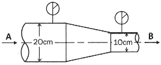
- 10
- 25
- 30
- 36
(정답률: 22%)
43. 세 변의 길이가 a, 2a, 3a인 작은 직육면체가 점도 μ인 유체 속에서 매우 느린 속도 V로 움직일 때, 항력 F는 F=F(a, μ, V)로 가정할 수 있다. 차원해석을 통하여 얻을 수 있는 F에 대한 표현식으로 옳은 것은?
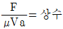
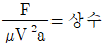
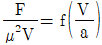
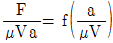
(정답률: 45%)
44. 온도증가에 따른 일반적인 점성계수 변화에 대한 설명으로 옳은 것은?
- 액체와 기체 모두 증가한다.
- 액체와 기체 모두 감소한다.
- 액체는 증가하고 기체는 감소한다.
- 액체는 감소하고 기체는 증가한다.
(정답률: 48%)
45. 그림과 같이 지름 D와 깊이 H의 원통 용기 내에 액체가 가득 차 있다. 수평방향으로의 등가속도(가속도=a) 운동을 하여 내부의 물의 35%가 흘러 넘쳤다면 가속도 a와 중력가속도 g의 관계로 옳은 것은? (단, D=1.2H이다.)
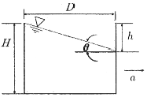
- a=0.58g
- a=0.85g
- a=1.35g
- a=1.42g
(정답률: 30%)
46. 다음 U자관 압력계에서 A와 B의 압력차는 몇 kPa인가? (단, H1=250mm, H2=200mm, H3=600mm이고 수은의 비중은 13,6이다.)
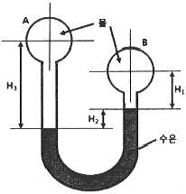
- 3.50
- 23.2
- 35.0
- 232
(정답률: 52%)
47. 물(μ=1.519×10-3kg/mㆍs)이 직경 0.3cm, 길이 9m인 수평 파이프 내부를 평균속도 0.9m/s로 흐를 때, 어떤 유동이 되는가?
- 난류유동
- 층류유동
- 등류유동
- 천이유동
(정답률: 52%)
48. 정상 2차원 포텐셜 유동의 속도장이 u=-6y, v=-4x일 때, 이 유동의 유동함수가 될 수 있는 것은? (단, C는 상수이다.)
- -2x2-3y2+C
- 2x2-3y2+C
- -2x2+3y2+C
- 22+3y2+C
(정답률: 31%)
49. 2차원 직각좌표계(x, y)에서 속도장이 다음과 같은 유동이 있다. 유동장 내의 점 (L, L)에서 유속의 크기는? (단,
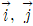
는 각각 x, y 방향의 단위벡터를 나타낸다.)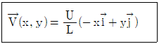
- 0
- U
- 2U
- √2 U
(정답률: 45%)
50. 표준공기 중에서 속도 V로 낙하하는 구형의 작은 빗방울이 받는 항력은 FD=3πμVD 로 표시할 수 있다. 여기에서 μ는 공기의 점성계수이며, D는 빗방울의 지름이다. 정지상태에서 빗방울 입자가 떨어지기 시작했다고 가정할 때, 이 빗방울의 최대속도(종속도, terminal velocity)는 지름 D의 몇 제곱에 비례하는가?
- 3
- 2
- 1
- 0.5
(정답률: 30%)
51. 지름이 10cm인 원 관에서 유체가 층류로 흐를 수 있는 임계 레이놀즈수를 2100으로 할 때 층류로 흐를 수 있는 최대 평균속도는 몇 m/s인가? (단, 흐르는 유체의 동점성계수는 1.8×10-6m2/s이다.)
- 1.89×10-3
- 3.78×10-2
- 1.89
- 3.78
(정답률: 57%)
52. 계기압 10kPa의 공기로 채워진 탱크에서 지름 0.02m인 수평관을 통해 출구 지름 0.01m인 노즐로 대기(101kPa) 중으로 분사된다. 공기밀도가 1.2kg/m3으로 일정할 때, 0.02m인 관 내부 계기압력은 약 몇 kPa인가? (단, 위치에너지는 무시한다.)
- 9.4
- 9.0
- 8.6
- 8.2
(정답률: 14%)
53. 피토정압관을 이용하여 흐르는 물의 속도를 측정하려고 한다. 액주계에는 비중 13.6인 수은이 들어있고 액주계에서 수은의 높이 차이가 20cm일 때 흐르는 물의 속도는 몇 m/s인가? (단, 피토정압관의 보정계수는 C=0.96이다.)
- 6.75
- 6.87
- 7.54
- 7.84
(정답률: 40%)
54. 점성계수 μ=0.98Nㆍs/m2인 뉴턴 유체가 수평벽면 위를 평행하게 흐른다. 벽면(y=0) 근방에서의 속도 분포가 u=0.5-150(0.1-y)2이라고 할 때 벽면에서의 전단응력은 몇 Pa인가? (단, y[m]는 벽면에 수직한 방향의 좌표를 나타내며, u는 벽면 근방에서의 접선속도[m/s]이다.)
- 0
- 0.306
- 3.12
- 29.4
(정답률: 49%)
55. 점성ㆍ비압축성 유체가 수평방향으로 균일속도로 흘러와서 두께가 얇은 수평 평판 위를 흘러 갈 때 Blasius의 해석에 따라 평판에서의 층류 경계층의 두께에 대한 설명으로 옳은 것을 모두 고르면?
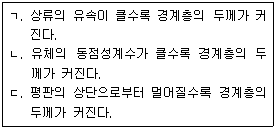
- ㄱ, ㄴ
- ㄱ, ㄷ
- ㄴ, ㄷ
- ㄱ, ㄴ, ㄷ
(정답률: 41%)
56. 액체 제트가 깃(vane)에 수평방향으로 분사되어 θ만큼 방향을 바꾸어 진행할 때 깃을 고정시키는 데 필요한 힘의 합력의 크기를 F(θ)라고 한다.
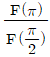
는 얼마인가? (단, 중력과 마찰은 무시한다.)- 1/√2
- 1
- √2
- 2
(정답률: 26%)
57. 그림과 같은 수문(ABC)에서 A점은 힌지로 연결되어 있다. 수문을 그림과 같은 닫은 상태로 유지하기 위해 필요한 힘 F는 몇 kN인가?
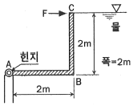
- 78.4
- 58.8
- 52.3
- 39.2
(정답률: 24%)
58. 관내의 부차적 손실에 관한 설명 중 틀린 것은?
- 부차적 손실에 의한 수두는 손실계수에 속도수두를 곱해서 계산한다.
- 부차적 손실은 배관 요소에서 발생한다.
- 배관의 크기 변화가 심하면 배관 요소의 부차적 손실이 커진다.
- 일반적으로 짧은 배관계에서 부차적 손실은 마찰손실에 비해 상대적으로 작다.
(정답률: 44%)
59. 공기 중을 20m/s로 움직이는 소형 비행선의 항력을 구하려고 1/4 축척의 모형을 물속에서 실험하려고 할 때 모형의 속도는 몇 m/s로 해야 하는가?
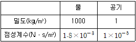
- 4.9
- 9.8
- 14.4
- 20
(정답률: 53%)
60. 지름이 8mm인 물방울의 내부 압력(게이지 압력)은 몇 Pa인가? (단, 물의 표면 장력은 0.075N/m이다.)
- 0.037
- 0.075
- 37.5
- 75
(정답률: 41%)
4과목: 기계재료 및 유압기기
61. 베어링에 사용되는 구리합금인 켈밋의 주성분은?
- Cu - Sn
- Cu - Pb
- Cu - Al
- Cu - Ni
(정답률: 52%)
62. 알루미늄 및 그 합금의 질별 기호 중 H가 의미하는 것은?
- 어닐링한 것
- 용체화처리한 것
- 가공 경화한 것
- 제조한 그대로의 것
(정답률: 50%)
63. 다음 중 용융점이 가장 낮은 것은?
- Al
- Sn
- Ni
- Mo
(정답률: 39%)
64. 표면은 단단하고 내부는 인성을 가지고 주철로 압연용 롤, 분쇄기 롤, 철도차량 등 내마멸성이 필요한 기계부품에 사용되는 것은?
- 회주철
- 칠드주철
- 구상흑연주철
- 펄라이트주철
(정답률: 56%)
65. 체심입방격자(BCC)의 인접 원자수(배위수)는 몇 개인가?
- 6개
- 8개
- 10개
- 12개
(정답률: 56%)
66. 탄소강이 950℃ 전후의 고온에서 적열메짐(red brittleness)을 일으키는 원인이 되는 것은?
- Si
- P
- Cu
- S
(정답률: 61%)
67. 금속 재료의 파괴 형태를 설명한 것 중 다른 하나는?
- 외부 힘에 의해 국부수축 없이 갑자기 발생되는 단계로 취성 파단이 나타난다.
- 균열의 전파 전 또는 전파 중에 상당한 소성변형을 유발한다.
- 인장시험 시 컵-콘(원뿔) 형태로 파괴된다.
- 미세한 공공 형태의 딤플 형상이 나타난다.
(정답률: 36%)
68. 열경화성 수지에 해당하는 것은?
- ABS 수지
- 폴리스티렌
- 폴리에틸렌
- 에폭시 수지
(정답률: 57%)
69. Fe-Fe3C 평형상태도에 대한 설명으로 옳은 것은?
- A0는 철의 자기변태점이다.
- A1 변태선을 공석선이라 한다.
- A2는 시멘타이트의 자기변태점이다.
- A3는 약 1400℃ 이며, 탄소의 함유량이 약 4.3%℃이다.
(정답률: 45%)
70. 오스테나이트형 스테인리스강에 대한 설명으로 틀린 것은?
- 내식성이 우수하다.
- 공식을 방지하기 위해 할로겐 이온의 고농도를 피한다.
- 자성을 띠고 있으며, 18%Co와 8%Cr을 함유한 합금이다.
- 입계부식 방지를 위하여 고용화처리를 하거나, Nb 또는 Ti을 첨가한다.
(정답률: 54%)
71. 유압장치의 운동부분에 사용되는 실(seal)의 일반적인 명칭은?
- 심레스(seamless)
- 개스킷(gasket)
- 패킹(packing)
- 필터(filter)
(정답률: 59%)
72. 유압 회로 중 미터 인 회로에 대한 설명으로 옳은 것은?
- 유량제어 밸브는 실린더에서 유압작동유의 출구 측에 설치한다.
- 유량제어 밸브는 탱크로 바이패스 되는 관로 쪽에 설치한다.
- 릴리프밸브를 통하여 분기되는 유량으로 인한 동력손실이 있다.
- 압력설정 회로로 체크밸브에 의하여 양방향만의 속도가 제어된다.
(정답률: 47%)
73. 그림과 같은 전환 밸브의 포트수와 위치에 대한 명칭으로 옳은 것은?
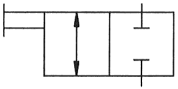
- 2/2-way 밸브
- 2/4-way 밸브
- 4/2-way 밸브
- 4/4-way 밸브
(정답률: 51%)
74. KS 규격에 따른 유면계의 기호로 옳은 것은?
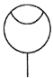
(정답률: 53%)
75. 유압장치의 각 구성요소에 대한 기능의 설명으로 적절하지 않은 것은?
- 오일 탱크는 유압 작동유의 저장기능, 유압 부품의 설치 공간을 제공한다.
- 유압제어밸브에는 압력제어밸브, 유량제어밸브, 방향제어밸브 등이 있다.
- 유압 작동체(유압 구동기)는 유압 장치 내에서 요구된 일을 하며 유체동력을 기계적 동력으로 바꾸는 역할을 한다.
- 유압 작동체(유압 구동기)에는 고무호스, 이음쇠, 필터, 열교환기 등이 있다.
(정답률: 55%)
76. 속도 제어 회로의 종류가 아닌 것은?
- 미터 인 회로
- 미터 아웃 회로
- 로킹 회로
- 블리드 오프 회로
(정답률: 64%)
77. 어큐뮬레이터 종류인 피스톤 형의 특징에 대한 설명으로 적절하지 않은 것은?
- 대형도 제작이 용이하다.
- 축 유량을 크게 잡을 수 있다.
- 형상이 간단하고 구성품이 적다.
- 유실에 가스 침입의 염려가 없다.
(정답률: 58%)
78. 유압펌프에서 실제 토출양과 이론 토출량의 비를 나타내는 용어는?
- 펌프의 토크 효율
- 펌프의 전 효율
- 펌프의 입력 효율
- 펌프의 용적 효율
(정답률: 61%)
79. 난연성 작동유의 종류가 아닌 것은?
- R&O형 작동유
- 수중 유형 유화유
- 물-글리콜형 작동유
- 인산 에스테르형 작동유
(정답률: 50%)
80. 작동유 속의 불순물을 제거하기 위하여 사용하는 부품은?
- 패킹
- 스트레이너
- 어큐뮬레이터
- 유체 커플링
(정답률: 63%)
5과목: 기계제작법 및 기계동력학
81. 등가속도 운동에 관한 설명으로 옳은 것은?
- 속도는 시간에 대하여 선형적으로 증가하거나 감소한다.
- 변위는 시간에 대하여 선형적으로 증가하거나 감소한다.
- 속도는 시간의 제곱에 비례하여 증가하거나 감소한다.
- 변위는 속도의 세제곱에 비례하여 증가하거나 감소한다.
(정답률: 56%)
82. 그림과 같이 원판에서 원주에 있는 점 A의 속도가 12m/s일 때 원판의 각속도는 약 몇 rad/s인가? (단, 원판의 반지름 r은 0.3m이다.)
- 10
- 20
- 30
- 40
(정답률: 56%)
83. 같은 길이의 두 줄에 질량 20kg의 물체가 매달려 있다. 이 중 하나의 줄을 자르는 순간의 남는 줄의 장력은 약 몇 N인가? (단, 줄의 질량 및 강성은 무시한다.)
- 98
- 170
- 196
- 250
(정답률: 28%)
84. 다음 단순조화운동 식에서 진폭을 나타내는 것은?
- A
- ωt
- ωt+ϕ
- Asin(ωt+ϕ)
(정답률: 55%)
85. 균질한 원통(cylinder)이 그림과 같이 물에 떠있다. 평형상태에 있을 때 손으로 눌렀다가 놓아주면 상하 진동을 하게 되는데 이때 진동주기(τ)에 대한 식으로 옳은 것은? (단, 원통질량 m, 원통단면적은 A, 물의 밀도는 p이고, g는 중력가속도이다.)
(정답률: 30%)
86. 질량 30kg의 물체를 담은 두레박 B가 레일을 따라 이동하는 크레인 A에 6m 길이의 줄에 의해 수직으로 매달려 이동하고 있다. 일정한 속도로 이동하던 크레인이 갑자기 정지하자, 두레박 B가 수평으로 3m까지 흔들렸다. 크레인 A의 이동 속도력은 약 몇 m/s인가?
- 1
- 2
- 3
- 4
(정답률: 23%)
87. 다음 그림과 같이 진동계에 가진력 F(t)가 작용할 때, 바닥으로 전달되는 힘의 최대 크기가 F1보다 작기 위한 조건은? (단, 이다.)
(정답률: 45%)
88. 두 질점이 정면 중심으로 완전탄성충돌할 경우에 관한 설명으로 틀린 것은?
- 반발계수 값은 1이다.
- 전체 에너지는 보존되지 않는다.
- 두 질점의 전체 운동량이 보존된다.
- 충돌 후 두 질점의 상대속도는 충돌 전 두 질점의 상대속도와 같은 크기이다.
(정답률: 53%)
89. 길이 1.0m, 질량 10kg의 막대가 A점에 핀으로 연결되어 정지하고 있다. 1kg의 공이 수평속도 10m/s로 막대의 중심을 때릴 때, 충돌 직후 막대의 각속도는 약 몇 rad/s 인가? (단, 공과 막대 사이에 반발계수는 0.4이다.)
- 1.95
- 0.86
- 0.68
- 1.23
(정답률: 16%)
90. 질량이 18kg, 스프링 상수가 50N/cm, 감쇠계수 0.6Nㆍs/cm인 1자유도 점성감쇠계에서 진동계의 감쇠비는?
- 0.10
- 0.20
- 0.33
- 0.50
(정답률: 49%)
91. 와이어 컷(wire cut) 방전가공의 특징으로 틀린 것은?
- 표면거칠기가 양호하다.
- 담금질강과 초경합금의 가공이 가능하다.
- 복잡한 형상의 가공물을 높은 정밀도로 가공할 수 있다.
- 가공물의 형상이 복잡함에 따라 가공속도가 변한다.
(정답률: 50%)
92. 어미나사의 피치가 6mm인 선반에서 1인치당 4산의 나사를 가공할 때, A와 D의 기어의 잇수는 각각 얼마인가? (단, A는 주축 기어의 잇수이고, D는 어미나사 기어의 잇수이다.)
- A = 60, D = 40
- A = 40, D = 60
- A = 127, D = 120
- A = 120, D = 127
(정답률: 29%)
93. 다음 중 소성가공에 속하지 않는 것은?
- 코이닝(coining)
- 스웨이징(swaging)
- 호닝(honing)
- 딥 드로잉(deep drawing)
(정답률: 39%)
94. 노즈 반지름이 있는 바이트로 선삭 할 때 가공 면의 이론적 표면 거칠기를 나타내는 식은? (단, f는 이송, R은 공구의 날 끝 반지름이다.)
- f2/8R
- f/8R2
- f/8R
- f/4R
(정답률: 32%)
95. 경화된 작은 강철 볼(ball)을 공작물 표면에 분사하여 표면을 매끈하게 하는 동시에 피로 강도와 그 밖의 기계적 성질을 향상시키는데 사용하는 가공방법은?
- 숏 피닝
- 액체 호닝
- 슈퍼피니싱
- 래핑
(정답률: 61%)
96. Al을 강의 표면에 침투시켜 내스케일성을 증가시키는 금속 침투 방법은?
- 파커라이징(parkerizing)
- 칼로라이징(calorizing)
- 크로마이징(chromizing)
- 금속용사법(metal spraying)
(정답률: 63%)
97. 다음 중 자유단조에 속하지 않는 것은?
- 업세팅(up-setting)
- 블랭킹(blacking)
- 늘리기(drawing)
- 굽히기(bending)
(정답률: 54%)
98. 주물의 결함 중 기공(blow hole)의 방지대책으로 가장 거리가 먼 것은?
- 주형 내의 수분을 적게 할 것
- 주형의 통기성을 향상시킬 것
- 용탕에 가스함유량을 높게 할 것
- 쇳물의 주입온도를 필요이상으로 높게 하지 말 것
(정답률: 61%)
99. 용접 피복제의 역할로 틀린 것은?
- 아크를 안정시킨다.
- 용접에 필요한 원소를 보충한다.
- 전기 절연작용을 한다.
- 모제 표면의 산화물을 생성해 준다.
(정답률: 59%)
100. 방전가공에서 전극 재료의 구비조건으로 가장 거리가 먼 것은?
- 기계가공이 쉬워야 한다.
- 가공 전극의 소모가 커야 한다.
- 가공 정밀도가 높아야 한다.
- 방전이 안전하고 가공속도가 빨라야 한다.
(정답률: 65%)
또한, 균일분포하중이 작용하는 경우, 최대 처짐은 (5/384)ωL4/EI이다.
따라서, P를 받는 외팔보의 최대 처짐과 균일분포하중이 작용하는 외팔보의 최대 처짐이 동일하다는 조건을 이용하여 다음과 같은 식을 세울 수 있다.
P/(48EI) = (5/384)ωL4/EI
이를 정리하면,
W/P = (32/5)(L/δ)2
따라서, 두 경우의 비는 (L/δ)2의 값에 따라 결정된다. 두 경우의 자유단 처짐이 동일하므로, L/δ1 = L/δ2이다. 따라서, (L/δ)2는 두 경우에서 동일하다.
따라서, W/P의 비는 (32/5)이다. 따라서, 정답은 8/3이다.